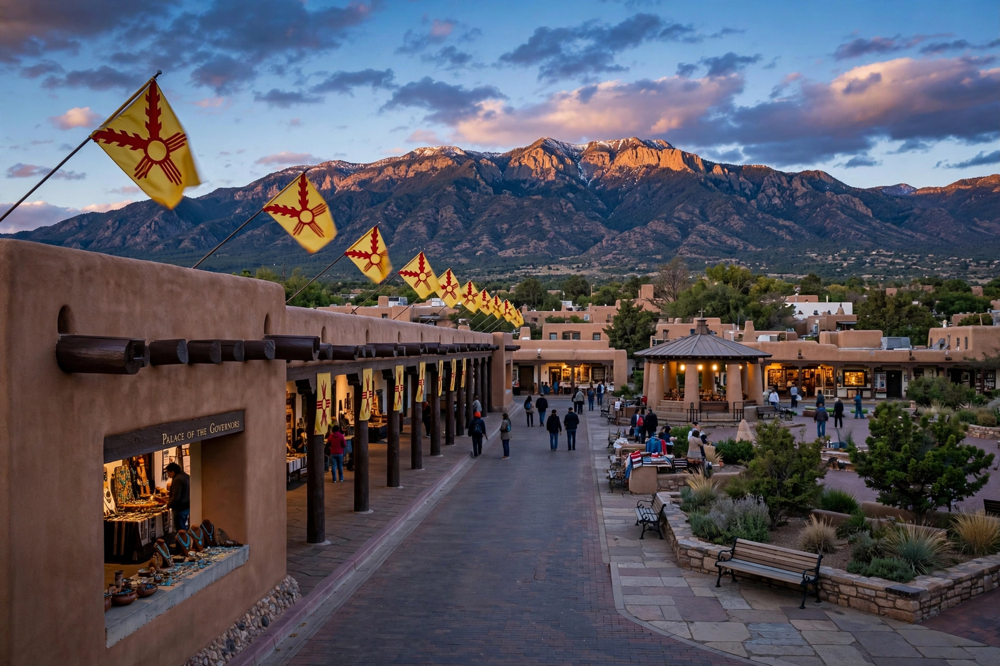

From Wikipedia, the free encyclopedia
| Santa Fe, New Mexico | |
|---|---|
 | |
| Country | United States |
| State | New Mexico |
| County | Santa Fe |
| Founded | 1610 |
| Elevation | 7,199 ft (2,194 m) |
| Population (2020) | 87,505 |
| Nickname | "The City Different" |
Santa Fe (Spanish: La Villa Real de la Santa Fe de San Francisco de Asís, "the Royal Town of the Holy Faith of Saint Francis of Assisi") is the capital of the U.S. state of New Mexico. Founded in 1610 as the capital of Nuevo México, a province of New Spain, it is the oldest state capital in the United States and one of the oldest continuously inhabited European-founded cities in the country. With an elevation of 7,199 feet (2,194 m), it is also the highest state capital.
The site was occupied for centuries by Indigenous Pueblo peoples before Spanish colonists under Governor Pedro de Peralta formally founded the city in 1610. Santa Fe served as the northern terminus of El Camino Real de Tierra Adentro, the trade route from Mexico City. During the Pueblo Revolt of 1680, the city's Spanish residents were driven out; Diego de Vargas re-entered the city peacefully in 1692. The Palace of the Governors, built in 1610, is the oldest continuously used public building in the United States.
In 1821 Santa Fe became part of independent Mexico, and the Santa Fe Trail linked it to Missouri, making it a major trade hub. U.S. forces under Stephen W. Kearny occupied the city without a battle in 1846 during the Mexican–American War. It became the capital of New Mexico Territory, and then of the state in 1912.
Santa Fe is renowned as an arts center, with more than 200 galleries concentrated around the Plaza and Canyon Road, the Santa Fe Opera, and the Georgia O'Keeffe Museum, dedicated to the artist Georgia O'Keeffe, who lived nearby at Ghost Ranch and in Abiquiú. Strict zoning has preserved the city's distinctive Pueblo Revival and Territorial Revival adobe architecture. Annual events include the Santa Fe Indian Market and the burning of Zozobra during the Fiestas de Santa Fe.
The city lies in the foothills of the Sangre de Cristo Mountains at the southern end of the Rocky Mountains, beside the Santa Fe River. Its high-desert climate features four distinct seasons, warm summers, and cold winters with moderate snowfall; the nearby Ski Santa Fe operates on Santa Fe Baldy.